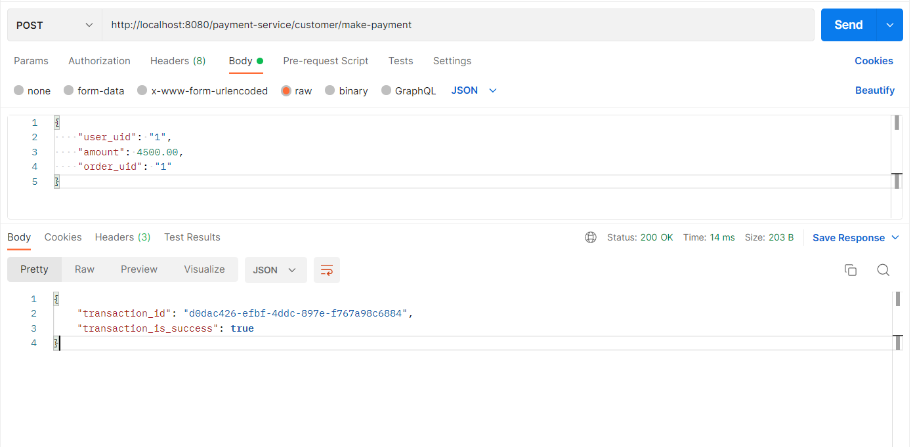

Overview
In the previous articles, we have successfully created the eureka-server, the order-service and the user-service. now we are going to create one of next microservices. the next service which we are going to implement is payment-service. in the payment-service we want to have two endpoints for execute the place-order according the use-case for now (for the example without using stacksaga).
The following endpoints will be created in this part
-
POST
/payment-service/customer/make-payment
Creating user-service.
Visit to the spring initializer and create the project by adding the following dependencies.

Database
There is one table called ss_customer_payment in th payment-service-db. it has
user's purchasing details.
(you don't want to creat the database manually. because, spring-data-jpa will create the
database and the tables when start the project.)
Implementation of payment-service
Configuration properties
same as the user-service, we have to put our properties in the application.yml
file.
application.yml
payment-service > src/main/resources/application.ymlAnnotate the main class
for now, we have been using the only eureka client in this project. therefore, one and only
annotation for main class is @EnableEurekaClient.
Entity classes
to access the database, we have to create the entity classes same as the before article. in the
payment-service microservice's database we have only one table called
ss_customer_payment.
let's create the CustomerPaymentEntity.class
* In the entity class, we have created an enum class to manage the payment-status.
Repository classes of payment-service
To access the CustomerPaymentEntity.class we want to have a repository called
CustomerPaymentRepository.class
CustomerPaymentRepository.class
user-service > org/mono/stacksaga/example/paymentservice/repository/CustomerPaymentRepository.javafor now, the repository has no any extra created methods. the default existing extended methods are enough to play the role. (the example with using stacksaga, more additional method will be created.)
Service classes of the payment-service
To access the CustomerPaymentRepository.class we want to have a service called
CustomerPaymentService.class. but before creating the service class we should have
a
model class (PaymentSubmitModel.class) to pass the data.
PaymentSubmitModel.class
payment-service > org/mono/stacksaga/example/paymentservice/model/PaymentSubmitModel.javalet's creat the CustomerPaymentService class
CustomerPaymentService.class
user-service > org/mono/stacksaga/example/paymentservice/service/CustomerPaymentService.javaController classes of payment-service
now we are going to create the endpoints for make-payment. therefore, we will be creating
controller class called CustomerPaymentController.java
before creating the controller class we are going to create the response DTO and request DTO objects for transfer the data through the endpoint.
MakePaymentRequestBody.class
payment-service > org/mono/stacksaga/example/paymentservice/dto/MakePaymentRequestBody.javaMakePaymentResponseBody.class
payment-service > org/mono/stacksaga/example/paymentservice/dto/MakePaymentResponseBody.javaNow we are going to create our CustomerPaymentController class by using the response body and request body classes that created above.
CustomerPaymentController.class
payment-service > org/mono/stacksaga/example/paymentservice/controller/CustomerPaymentController.javahere is the endpoint-testing by using api-gateway and eureka service with payment-service.
The url will be connected like this;
{API_GATEWAY_HOST}/{SERVICE_NAME}/{MAPPING}
http://localhost:8080/payment-service/customer/make-payment

Check the health by using the Curl.
After all, The user-server project folder and file structure like below.
└───main
├───java
│ └───org
│ └───mono
│ └───stacksaga
│ └───example
│ └───paymentservice
│ │ PaymentServiceApplication.java
│ │
│ ├───controller
│ │ CustomerPaymentController.java
│ │
│ ├───dto
│ │ MakePaymentRequestBody.java
│ │ MakePaymentResponseBody.java
│ │
│ ├───entity
│ │ CustomerPaymentEntity.java
│ │
│ ├───model
│ │ PaymentSubmitModel.java
│ │
│ ├───repository
│ │ CustomerPaymentRepository.java
│ │
│ └───service
│ CustomerPaymentService.java
│
└───resources
│ application.yml
│
├───static
└───templates
Example series
-
Microservice example without using StackSAGA (Imperative way)
-
Microservice example by using StackSAGA (Imperative way).